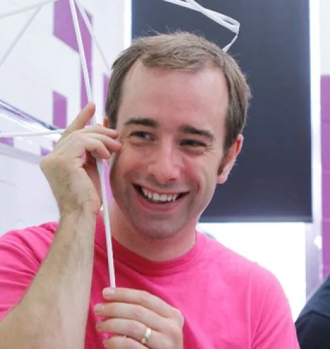
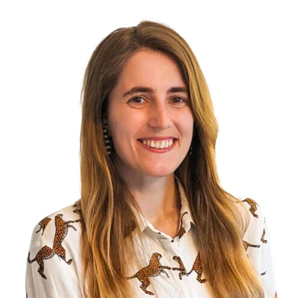
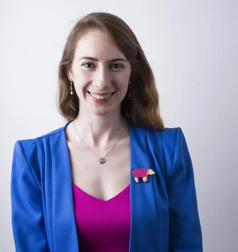
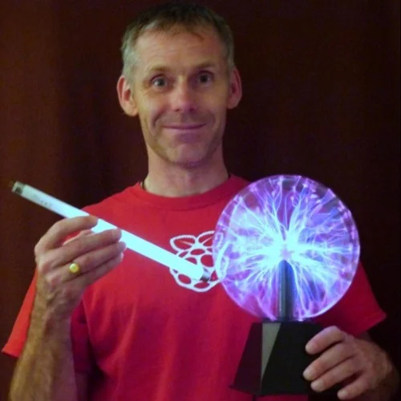
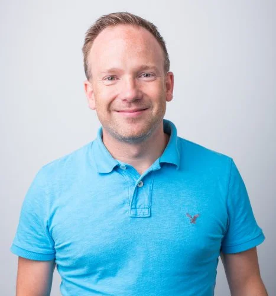
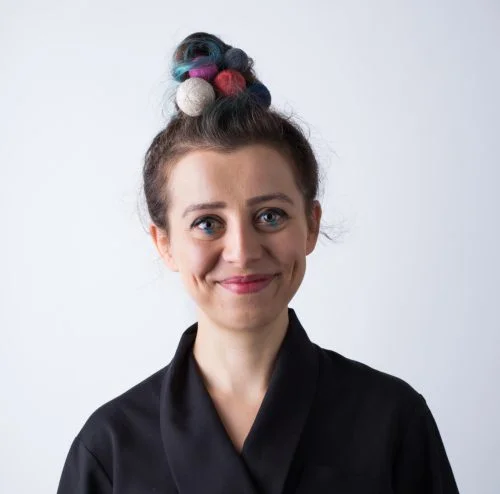
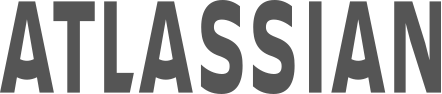
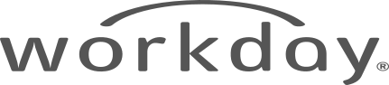
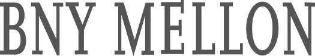

"Hello, Sharing world"
2022
We’re thrilled to be joining over 1000 computing educators in the USA at the Computer Science Teachers Association (CSTA) Annual Conference in Chicago in July.
2022.09.22(THU) ~ 30(FRI)
@ RPi Computing Education Research, Cambridge, UK
main program
-
Conference
Listen to lectures from speakers from around the world and learn about the latest trends in the world.
-
RPi Exhibition
Let's meet the creations of artists from various fields who share the open spirit of Raspbian Community.
-
Forum
We have time to share our thoughts and opinions with experts by topic.
-
Workshop
You can create your own creations using open source instead of just looking at them.
-
Networking
Get opportunity to network with Raspbian communities around the world, also after summit.
featured speakers
-

James RobinsonSenior Learning Manager, Pedagogy and Training
James is an ex-teacher, and now manages our training programmes for educators. He still plays with Lego and drinks a lot of tea.
-

Gemma ColemanHello World Editor
Gemma is the Editor of Hello World, our magazine for computing educators. Gemma enjoys being outside as much as possible - climbing, hiking, kayaking and exploring the world.
-

Naula McHaleGlobal Engagement Manager
Naula manages communications and engagement for CoderDojo. She's a Dojo mentor and enjoys seeing kids make hilarious projects. She also loves animals, farming, making things, theatre, the art, and food.
-

Richard HaylerSenior Programme Manager, Community and Development
Richard runs our Citizen Science programme, including the Weather Station project. He's an engineer who's easily distracted by comics, music, rugby, and LEGO. His quest to combine them into a single activity is ongoing.
-

Martin O'HanlonSenior Learning Manager
Martin loves technology and creates projects and learning resources for Raspberry Pi. As a child, he wanted to be either a computer scientist, an astronaut, or a snowboard instructor.
-

Magdalena JadachSoftware Engineer
Software Engineer at Raspberry Pi Foundation. Electronic enthusiast, kazik's mum and foodie. An advocate for diversity in tech.
partners
- 
- 
- 